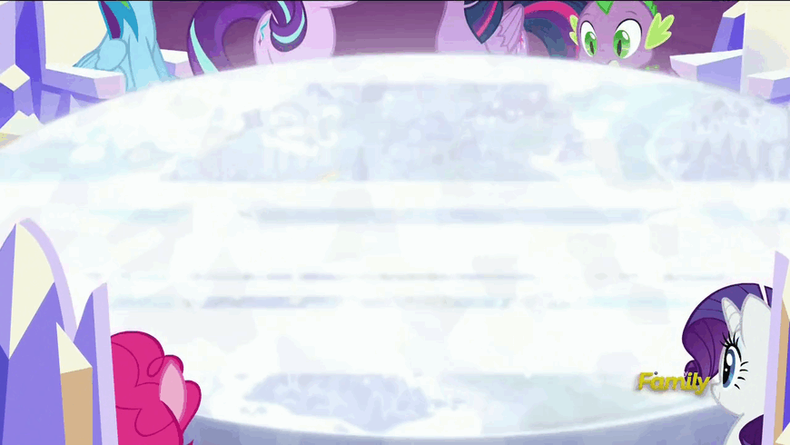

"Figures," Rainbow Dash says to Rarity, as they head towards Twilight's Castle. "The one day I get off from Wonderbolts training, and we get called for a friendship problem."
Rarity looks up at Rainbow Dash in amusement. "Yes, well, you know how these things are. They never happen when you want them to."
"I know! And I'd never leave Twilight hanging. I just wanted to sleep in for once. Is that so much to ask?"
They open the door to the throne room. Fluttershy, Pinkie Pie, and Applejack wave at them, while Twilight looks at the Friendship Map in worry. It looks much worse for wear. Crackles of static pour out from its surface.
Sitting down, Rarity coughs politely. "We're here."
Twilight looks up in surprise. "Oh, sorry! Right, let's get started. The Map's called us to solve a friendship problem. Normally, it'd tell us where to go. However..." She gestures towards the Map.

"How'd this even happen?" Rainbow asks.
"Starlight and I ran some experiments to see if we could understand the Friendship Map better. And, long story short, we broke it. We've been trying to unbreak it, but haven't had much luck. I was hoping we'd fix it before a friendship problem showed up, but so much for that. We won't know where we need to go for our friendship problem until we fix the Map."
Pinkie Pie pipes up. "Have you tried turning it off and on again?"
"Pinkie, it's a magical artifact created by ancient Equestrian magic. It doesn't work that way."
"Hot soup works for the animals at my cottage when they get sick," Fluttershy says. "Is there a magical equivalent of that?"
"That...actually, hang on." Twilight lowers her head to the table, concentrating magic through her horn. The Map glows for a second, then fades. She shakes her head. "Nope. But it was a good try."
Applejack gets out of her chair. "Well, when something breaks on the farm, there's one thing that's always worked for me."
"What's that?" Twilight says, as Applejack turns away from the Map, plants her forelegs, and tenses her hind legs. Twilight's eyes widen in horror, as she realizes what Applejack plans to do. "Wait, don't --"
Applejack kicks her hind legs into the Friendship Map, in a picture-perfect applebucking motion. Twilight's jaw drops as the Map wobbles a bit, then settles. Applejack looks at her handiwork and smiles.
"There! Looks better to me!"
Twilight starts a retort, but when she takes another look, she sees that Applejack's telling the truth.
"...Applejack, next time, ask me for permission first."
The Map displays six symbols, matching the cutie marks of each of the Mane 6. Fluttershy gasps. "SIX problems? Has that ever happened before?"
"The Map never lies. But, it might be confused." Lowering her horn to the Map again, Twilight casts a diagnostic spell. She nods her head. "Yep. None of those six problems are the friendship problem we're looking for. However, if we solve the puzzles in those locations, we should be able to figure out where this friendship problem really is."
Rainbow Dash flies out of her chair. "Then what are we waiting for? Let's go!"